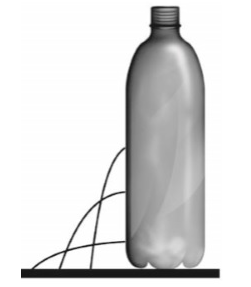
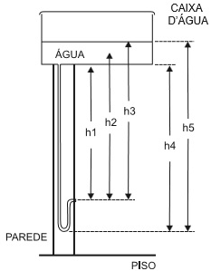
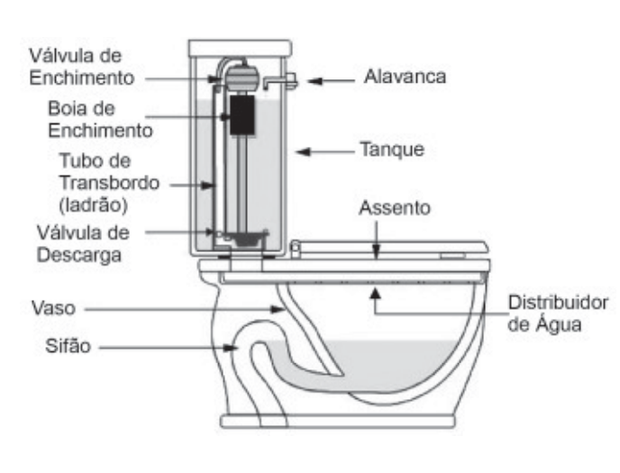
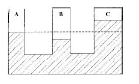
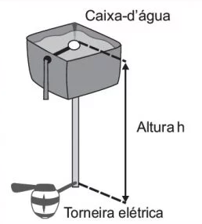
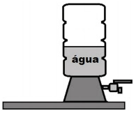
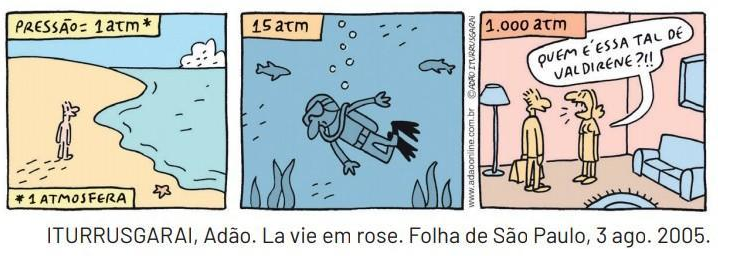

Como a pressão atmosférica interfere no escoamento da água, nas situações com a garrafa tampada e destampada, respectivamente?
a) Impede a saída de água, por ser maior que a pressão interna; não muda a velocidade de escoamento, que só depende da pressão da coluna de água.
b) Impede a saída de água, por ser maior que a pressão interna; altera a velocidade de escoamento, que é proporcional à pressão atmosférica na altura do furo.
c) Impede a entrada de ar, por ser menor que a pressão interna; altera a velocidade de escoamento, que é proporcional à pressão atmosférica na altura do furo.
d) Impede a saída de água, por ser maior que a pressão interna; regula a velocidade de escoamento, que só depende da pressão atmosférica.
e) Impede a entrada de ar, por ser menor que a pressão interna; não muda a velocidade de escoamento, que só depende da pressão da coluna de água.

O valor da pressão da água na ducha está associado à altura
|
a) h1. b) h2. |
c) h3. d) h4. |
e) h5. |

A característica de funcionamento que garante essa economia é devida:
|
a) à altura do sifão de água. b) ao volume do tanque de água. c) à altura do nível de água no vaso. |
d) ao diâmetro do distribuidor de água. e) à eficiência da válvula de enchimento do tanque. |

Sendo pA a pressão atmosférica ambiente, pB e pC as pressões do ar confinado nos ambientes B e C, pode-se afirmar que é válida a relação:
|
a) PA = PB > PC. b) PA > PB = PC. |
c) PA > PB > PC. d) PB > PA > PC. |
e) PB > PC > PA. |
Se a torneira for conectada à caixa-d’água domiciliar, a pressão da água na entrada da torneira deve ser no mínimo 18 kPa e no máximo 38 kPa.
Para pressões da água entre 38 kPa e 75 kPa ou água proveniente diretamente da rede pública, é necessário utilizar o redutor de pressão que acompanha o produto.
Essa torneira elétrica pode ser instalada em um prédio ou em uma casa.

Considere a massa específica da água 1 000 kg/m3 e a aceleração da gravidade 10 m/s² Para que a torneira funcione corretamente, sem o uso do redutor de pressão, quais deverão ser a mínima e a máxima altura entre a torneira e a caixa-d’água?
|
a) 3,8 m e 7,5 m. b) 1,8 m e 7,5 m. |
c) 18 m e 38 m. d) 1,8 m e 3,8 m. |
e) 18 m e 75 m. |
I) A determinação da densidade ou altura das colunas de líquido é feita a partir da lei de Stevin.
II) A pressão atmosférica só fará diferença se, pelo menos, uma das extremidades do recipiente estiver fechada.
III) A menor coluna de líquido sempre será daquele que possui menor densidade.
IV) A pressão para pontos de mesma altura será a mesma.
Marque a alternativa correta.
|
a) As afirmações I, III e IV são verdadeiras. b) As afirmações II e III são falsas. c) Todas as afirmações são verdadeiras. |
d) Somente I é verdadeira. e) As afirmações I, II e IV são verdadeiras. |

a) do volume de água contido no recipiente.
b) da massa de água contida no recipiente.
c) do diâmetro do orifício em que está ligada a torneira.
d) da altura da superfície da água em relação ao fundo do recipiente.
e) da altura da superfície da água em relação à torneira.

Calcule a que profundidade, na água, o mergulhador sofreria essa pressão de 1000 atm.